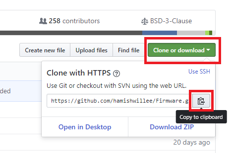

Building PX4 Software
PX4 can be built on the console or in an IDE, for both simulated and hardware targets.
Downloading PX4 Source Code
The PX4 source code is stored on Github in the PX4/Firmware repository. We recommend that you fork this repository (creating a copy associated with your own Github account), and then clone the source to your local computer.
Forking the repository allows you to better manage your custom code. Later on you will be able to use git to share changes with the main project.
The steps to fork and clone the project source code are:
- Sign up to Github.
Go to the Firmware repository and click the Fork button near the upper right corner. This will create and open the forked repository.

Copy the repository URL for your Firmware repository fork. The easiest way to do this is to click the Clone or download button and then copy the URL:

- Open a command prompt/terminal on your computer
- On OS X, hit ⌘-space and search for 'terminal'.
- On Ubuntu, click the launch bar and search for 'terminal'.
- On Windows, find the PX4 folder in the start menu and click on 'PX4 Console'.
- Clone the repository fork using the copied URL. This will look something like:
Windows users refer to the Github help. You can use a git command line client as above or instead perform the same actions with the Github for Windows app.git clone https://github.com/<youraccountname>/Firmware.git
This will copy most of PX4 onto your computer (the rest of the code is automatically fetched from other git submodules when you build PX4).
If you're just experimenting (and don't want to make any sort of permanent changes) you can simply clone the main Firmware repository as shown:
git clone https://github.com/PX4/Firmware.git cd Firmware
First Build (Using the jMAVSim Simulator)
For the first build we'll build for a simulated target using a console environment. This allows us to validate the system setup before moving on to real hardware and an IDE.
Navigate into the Firmware directory and start jMAVSim using the following command:
make posix jmavsim
This will bring up the PX4 console below:

The drone can be flown by typing:
pxh> commander takeoff

The drone can be landed by typing commander land and the whole simulation can be stopped by doing CTRL+C (or by entering shutdown).
The simulation setup is documented in full detail here: jMAVSim Simulation.
Flying the simulation with the ground control station is closer to the real operation of the vehicle. Click on a location in the map while the vehicle is flying (takeoff flight mode) and enable the slider. This will reposition the vehicle.

NuttX / Pixhawk Based Boards
Building
To build for NuttX- or Pixhawk- based boards, navigate into the Firmware directory and then call make with the build target for your board.
In the example below the first part of the build target
px4fmu-v4is the autopilot hardware version anddefaultis the configuration name (in this case the "default" configuration). All PX4 build targets follow this logic).
For example, to build for Pixracer you would use the following command:
cd Firmware
make px4fmu-v4_default
A successful run will end with similar output to:
-- Build files have been written to: /home/youruser/src/Firmware/build/px4fmu-v4_default
[954/954] Creating /home/youruser/src/Firmware/build/px4fmu-v4_default/px4fmu-v4_default.px4
The following list shows the build commands for common boards:
- Pixhawk 4:
make px4fmu-v5_default - Pixracer:
make px4fmu-v4_default - Pixhawk 3 Pro:
make px4fmu-v4pro_default - Pixhawk Mini:
make px4fmu-v3_default - Pixhawk 2:
make px4fmu-v3_default - mRo Pixhawk:
make px4fmu-v3_default(supports 2MB Flash) - HKPilot32:
make px4fmu-v2_default - Pixfalcon:
make px4fmu-v2_default - Dropix:
make px4fmu-v2_default - MindPX/MindRacer:
make mindpx-v2_default - mRo X-2.1:
make auav-x21_default - Crazyflie 2.0:
make crazyflie_default - Intel® Aero Ready to Fly Drone:
make aerofc-v1_default - Pixhawk 1:
make px4fmu-v2_defaultYou must use a supported version of GCC to build this board (e.g. the same as used by CI/docker) or remove modules from the build. Building with an unsupported GCC may fail, as PX4 is close to the board's 1MB flash limit.
- AUAV-X2 (Discontinued):
make px4fmu-v2_default
Uploading Firmware (Flashing the board)
Append upload to the make commands to upload the compiled binary to the autopilot hardware via USB. For example
make px4fmu-v4_default upload
A successful run will end with this output:
Erase : [====================] 100.0%
Program: [====================] 100.0%
Verify : [====================] 100.0%
Rebooting.
[100%] Built target upload
Other Boards
The following boards have more complicated build and/or deployment instructions.
Raspberry Pi 2/3 Boards
The command below builds the target for Raspberry Pi 2/3 Navio2.
Cross-compiler Build
cd Firmware
make posix_rpi_cross # for cross-compiler build
The "px4" executable file is in the directory build/posix_rpi_cross/. Make sure you can connect to your RPi over ssh, see instructions how to access your RPi.
Then set the IP (or hostname) of your RPi using:
export AUTOPILOT_HOST=192.168.X.X
And upload it with:
cd Firmware
make posix_rpi_cross upload # for cross-compiler build
Then, connect over ssh and run it with (as root):
sudo ./px4 px4.config
Native Build
If you're building directly on the Pi, you will want the native build target (posix_rpi_native).
cd Firmware
make posix_rpi_native # for native build
The "px4" executable file is in the directory build/posix_rpi_native/. Run it directly with:
sudo ./build/posix_rpi_native/px4 ./posix-configs/rpi/px4.config
A successful build followed by executing px4 will give you something like this:
______ __ __ ___
| ___ \ \ \ / / / |
| |_/ / \ V / / /| |
| __/ / \ / /_| |
| | / /^\ \ \___ |
\_| \/ \/ |_/
px4 starting.
pxh>
Autostart
To autostart px4, add the following to the file /etc/rc.local (adjust it
accordingly if you use native build), right before the exit 0 line:
cd /home/pi && ./px4 -d px4.config > px4.log
Parrot Bebop
Support for the Parrot Bebop is at an early stage and should be used very carefully.
Build
cd Firmware
make posix_bebop_default
Turn on your Bebop and connect your host machine with the Bebop's wifi. Then, press the power button four times to enable ADB and to start the telnet daemon.
make posix_bebop_default upload
This will upload the PX4 mainapp into /usr/bin and create the file /home/root/parameters if not already present. In addition, we need the Bebop's mixer file and the px4.config. Currently, both files have to be copied manually using the following commands.
adb connect 192.168.42.1:9050
adb push ROMFS/px4fmu_common/mixers/bebop.main.mix /home/root
adb push posix-configs/bebop/px4.config /home/root
adb disconnect
Run
Connect to the Bebop's wifi and press the power button four times. Next, connect with the Bebop via telnet or adb shell and run the commands bellow.
telnet 192.168.42.1
Kill the Bebop's proprietary driver with
kk
and start the PX4 mainapp with:
px4 /home/root/px4.config
In order to fly the Bebop, connect a joystick device with your host machine and start QGroundControl. Both, the Bebop and the joystick should be recognized. Follow the instructions to calibrate the sensors and setup your joystick device.
Autostart
To auto-start PX4 on the Bebop at boot, modify the init script /etc/init.d/rcS_mode_default. Comment the following line:
DragonStarter.sh -out2null &
Replace it with:
px4 -d /home/root/px4.config > /home/root/px4.log
Enable adb server by pressing the power button 4 times and connect to adb server as described before:
adb connect 192.168.42.1:9050
Re-mount the system partition as writeable:
adb shell mount -o remount,rw /
In order to avoid editing the file manually, you can use this one : https://gist.github.com/mhkabir/b0433f0651f006e3c7ac4e1cbd83f1e8
Save the original one and push this one to the Bebop
adb shell cp /etc/init.d/rcS_mode_default /etc/init.d/rcS_mode_default_backup
adb push rcS_mode_default /etc/init.d/
Sync and reboot:
adb shell sync
adb shell reboot
OcPoC-Zynq Mini
Build instructions for the OcPoC-Zynq Mini are covered in:
- Aerotenna OcPoC-Zynq Mini Flight Controller > Building PX4 for OcPoC-Zynq (PX4 User Guide)
- OcPoC PX4 Setup Page
QuRT / Snapdragon Based Boards
This section shows how to build for the Qualcomm Snapdragon Flight.
Build
If you use the Qualcomm ESC board (UART-based), then please follow their instructions here. If you use normal PWM-based ESCs boards, then you may continue to follow the instructions on this page.
The commands below build the targets for the Linux and the DSP side. Both executables communicate via muORB.
cd Firmware
make eagle_default
To load the SW on the device, connect via USB cable and make sure the device is booted. Run this in a new terminal window:
adb shell
Go back to previous terminal and upload:
make eagle_default upload
Note that this will also copy (and overwrite) the two config files mainapp.config and px4.config to the device. Those files are stored under /usr/share/data/adsp/px4.config and /home/linaro/mainapp.config respectively if you want to edit the startup scripts directly on your vehicle.
The mixer currently needs to be copied manually:
adb push ROMFS/px4fmu_common/mixers/quad_x.main.mix /usr/share/data/adsp
Run
Run the DSP debug monitor:
${HEXAGON_SDK_ROOT}/tools/debug/mini-dm/Linux_Debug/mini-dm
Note: alternatively, especially on Mac, you can also use nano-dm.
Go back to ADB shell and run px4:
cd /home/linaro
./px4 mainapp.config
Note that the px4 will stop as soon as you disconnect the USB cable (or if you ssh session is disconnected). To fly, you should make the px4 auto-start after boot.
Autostart
To run the px4 as soon as the Snapdragon has booted, you can add the startup to rc.local:
Either edit the file /etc/rc.local directly on the Snapdragon:
adb shell
vim /etc/rc.local
Or copy the file to your computer, edit it locally, and copy it back:
adb pull /etc/rc.local
gedit rc.local
adb push rc.local /etc/rc.local
For the auto-start, add the following line before exit 0:
(cd /home/linaro && ./px4 mainapp.config > mainapp.log)
exit 0
Make sure that the rc.local is executable:
adb shell
chmod +x /etc/rc.local
Then reboot the Snapdragon:
adb reboot
Compiling in a Graphical IDE
The PX4 system supports Qt Creator, Eclipse and Sublime Text. Qt Creator is the most user-friendly variant and hence the only officially supported IDE. Unless an expert in Eclipse or Sublime, their use is discouraged. Hardcore users can find an Eclipse project and a Sublime project in the source tree.
Qt Creator Functionality
Qt creator offers clickable symbols, auto-completion of the complete codebase and building and flashing firmware.

Qt Creator on Linux
Before starting Qt Creator, the project file needs to be created:
cd ~/src/Firmware
mkdir ../Firmware-build
cd ../Firmware-build
cmake ../Firmware -G "CodeBlocks - Unix Makefiles"
Then load the CMakeLists.txt in the root firmware folder via File -> Open File or Project -> Select the CMakeLists.txt file.
After loading, the play button can be configured to run the project by selecting 'custom executable' in the run target configuration and entering 'make' as executable and 'upload' as argument.
Qt Creator on Windows
Windows has not been tested for PX4 development with Qt Creator.
Qt Creator on Mac OS
Before starting Qt Creator, the project file needs to be created:
cd ~/src/Firmware
mkdir -p build/creator
cd build/creator
cmake ../.. -G "CodeBlocks - Unix Makefiles"
That's it! Start Qt Creator, then complete the steps in the video below to set up the project to build.